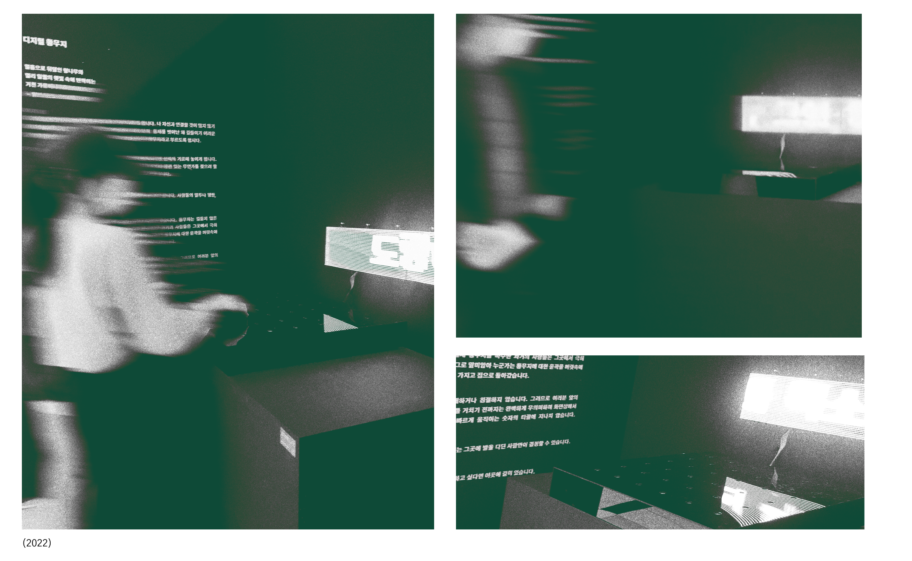
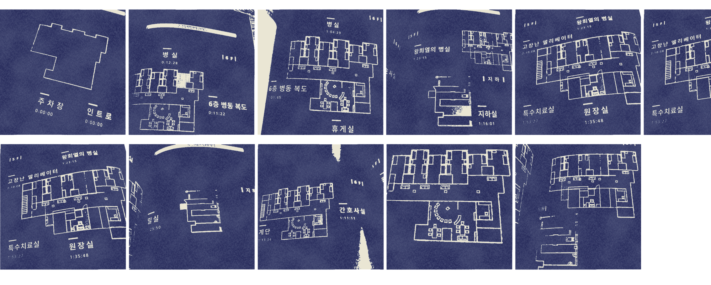
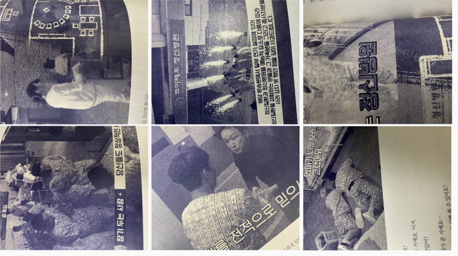
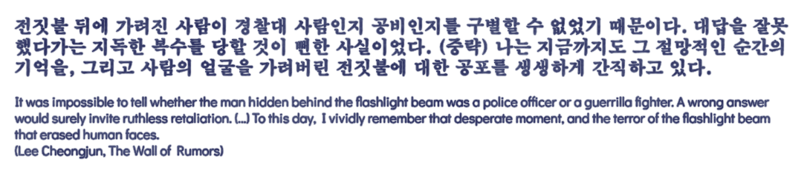
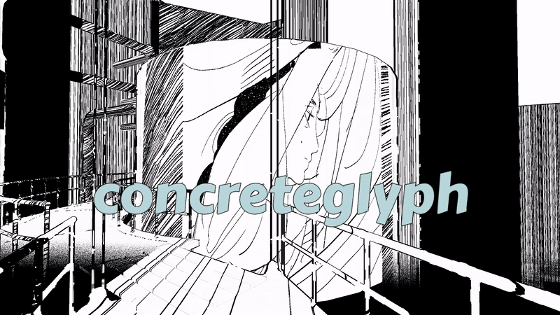
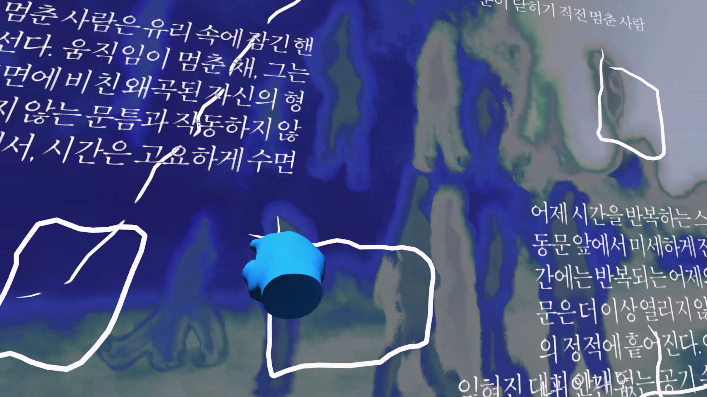
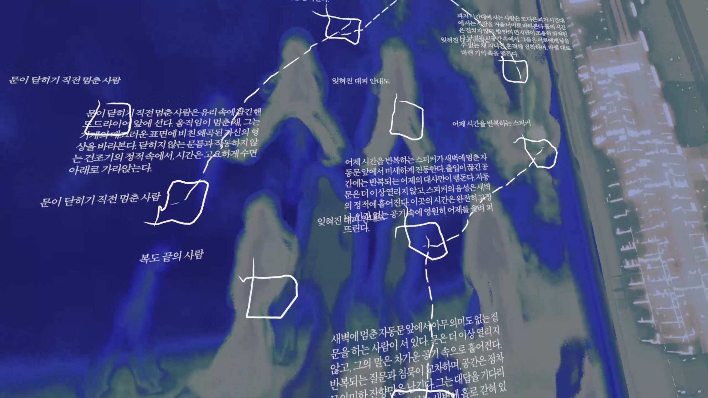
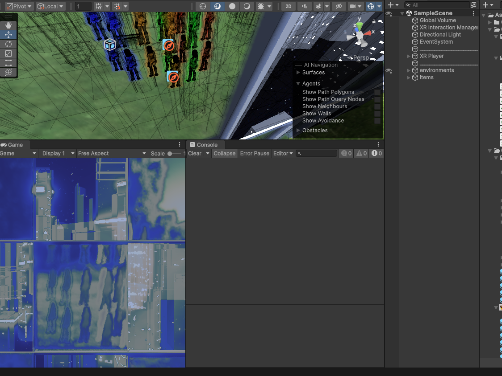

Wastelands: Nothingness as Spatial Potential in Digital Media
Interactive Installation
Slow Game Time
AI/Text Generation

For the listener, who listens in the snow,
And, nothing himself, beholds
Nothing that is not there and the nothing that is.
— Wallace Stevens
What does solitude in digital environments feel like? In a world of fast, efficient, and goal-oriented media, John Vanderhoef and Matthew Thomas Payne introduce the notion of “slow game time” to describe subversive temporalities in game design. In Red Dead Redemption 2 (Rockstar Studios’ 2018 blockbuster western saga), players are encouraged to linger—doing nothing in particular but simply wandering the expansive wilderness or gazing at its vast horizon. These moments of pause become a kind of stillness that resists productivity.
This stillness—this idle, marginal space of non-doing—also finds resonance in the poetics of Wallace Stevens. In Stevens’ philosophy, nothingness is not merely an absence but a generative field “against which the idea of existence needs to be understood and defined.” Rather than destruction, it becomes “the dialectical antithesis of creation”—the womb of possibility, a space from which meaning can emerge (Pack, 2003).
Wastelands was conceived as a project that rejects the logic of efficiency, friendliness, and purposefulness embedded in many capitalist digital interfaces. Like a first visit to an unfamiliar city—cold, slow, incomprehensible—this digital landscape delays interpretation, resists clarity, and invites quiet contemplation. Its low-resolution context does not offer immediate meaning; instead, the very ambiguity opens room for personal myth-making. The strangeness of an unexplained space becomes a canvas for reflection. As Stevens writes, imagination “searches a possible for its possibleness” (CP 481).
The installation consists of two main elements:
– A tactile interface composed of a 6×6 grid, forming 36 small circular openings
– An LED matrix screen that displays generative text output from a fine-tuned language model

The interface functions as a space for accidental encounters. As participants place their hands over the openings, some of them trigger AI-generated text based on hidden prompts. The resulting phrases are often fragmentary—poetic, cryptic, or obliquely suggestive. Other holes yield nothing at all.
This rough, unhelpful, and even contradictory interface is crucial to the experience. The goal is not to inform or entertain but to create a liminal space of indirect engagement—where the user is neither fully in control nor completely lost. The machine was developed using Raspberry Pi and Python, with a custom-trained language model.
By transforming digital interactivity into something slow, imprecise, and contemplative, Wastelands attempts to subvert dominant narratives of technological immediacy. It opens a space in which digital solitude can be experienced not as an absence, but as a presence of hesitation—an invitation to behold “the nothing that is.”
Flashlight: On the Blurring Boundaries Between Observer and Observed in Korean Horror Entertainment
Research Based Book
Media and Cultural Analysis
Spectatorship and Otherness
This project began as a collaborative inquiry into how horror media constructs—and destabilizes—the boundary between normality and abnormality. Early on, we were interested not only in the conventions of horror itself, but also in how audiences consume and participate in it. Depending on the media format, the audience may engage as semi-viewers: writing comments, liking or recommending content, or even acting as partial co-creators within participatory formats like escape-room games. In doing so, they become not only co-authors of the narrative in a broad sense, but also subjects who perform the gaze of othering—a core mechanism of horror.
We chose to focus on the popular South Korean escape-room variety show The Great Escape(대탈출), specifically a two-part episode set in a fictional psychiatric hospital. The episode deploys typical horror conventions: a surveillance-heavy institution, eerie figures, and narrative frameworks of confinement and paranoia. Yet it also functions as light entertainment, driven by a cast of well-known comedians navigating the horror setting with comedic undertones.
What fascinated us most was that these protagonists were both characters and genre-aware viewers. The scenario begins with the celebrities waking up in a psychiatric facility—confined not for any plausible diagnosis, but for fictional or exaggerated ailments that do not exist in real life. Aware of the horror tropes at play, the participants constantly shift registers: they engage seriously with the escape mechanics while deliberately resisting the mood from becoming too terrifying—both for themselves and the audience.

This form of genre subversion often hinges on spatial dynamics. For instance, one early moment reverses the usual surveillance trope: after realizing they’re being watched, the protagonists step out into the lobby and begin to observe the observers. It is no coincidence that much of horror depends on spatial estrangement. Sometimes this means defamiliarizing the domestic (as in many haunted-house films), and other times it means placing viewers in liminal spaces—abandoned malls, empty stairwells, or deserted schoolyards. The liminal space aesthetic, which gained popularity online after 2020, evokes uncanny discomfort through settings that should be populated but are eerily vacant.
Still, The Great Escape remains a game show. While the characters perform fear and confusion within an unfamiliar space, they are also puzzle-solvers who know they must escape. This double stance—half immersed, half strategic—extends not only to the space, but also to the secondary characters within it. These NPC-like figures, portrayed as hospital staff or patients, are appropriated as narrative devices for horror, only to be re-absorbed into a comic rhythm to maintain the balance of the show. The player-viewers themselves other these figures in two conflicting directions: first, to render them sufficiently "creepy" for horror, and second, to neutralize that horror into something safely comedic.

Within The Great Escape, the psychiatric hospital setting functions both as a recognizable horror space and a playground for subversion. The participants, while trapped within an environment saturated with horror conventions, routinely destabilize those conventions through humor, self-parody, and selective distancing. This half-performer, half-spectator stance reveals the complex layering of gaze, power, and identity in contemporary media.
The project culminated in a 140-page collaborative research volume. One metaphor that emerged as central during our investigation into othering was the “flashlight.” In Korean author Lee Cheongjun’s short story The Wall of Rumor, a powerful motif is the blinding beam of a flashlight, which hides the identity of the observer while exposing the observed. The imbalance of visibility becomes a symbol for the asymmetry of knowledge, surveillance, and power—key themes not only in literature but also in how horror media operates at the boundary of spectatorship and participation.

In critically engaging with The Great Escape, we also acknowledged its problematic aspects. Although framed as comedy, the show inevitably commodifies real-world stigmas associated with mental illness. Yet, precisely because of its hybrid genre—neither pure horror nor pure comedy—the show inadvertently exposes the fragility of normative categories. Characters oscillate between victim, perpetrator, and fool; spaces oscillate between safe and uncanny. Through this project, we examined how horror entertainment not only reflects but actively performs the instability of social classifications.
Concreteglyph: A Narrative Archaeology in Ruin
Walking Sim
Narrative Environment
Ruin

Concreteglyph is a kind of walking simulator game. The player wanders through a space more akin to a ruin or an abandoned construction site than a conventional game world—there are no NPCs, no shops, no monsters to fight. The surfaces are uneven, and if the player fails to jump correctly at times, they may not be able to return to the path they came from. The only available interaction is a single action: by clicking the left mouse button, the player projects an image onto whatever object they are facing—a water tank, a rough concrete wall, a set of exposed pipes. The image plays not on a screen but directly onto the uneven surfaces of the ruin.
While the player can walk around, the 3D environment offers no systems for leveling up, no enemies or companions to engage with. The images, projected randomly across the terrain, consistently depict humans—individuals or groups. These figures are not situated within the same ruined world as the player. Instead, they seem to belong to different contexts: sometimes modern infrastructure such as airports or shopping malls, or at other times, mundane daily life or natural settings. Regardless of the scene, they are shown waiting, having their gaze obscured, staring into indeterminate space, or caught mid-action for no discernible reason. Their anonymity and lack of relational context suggest a kind of disconnection.
The projected images, then, do not belong to the world of the simulator. They are temporally or spatially other. As prehistoric humans once painted on cave walls, or as fire cast flickering shadows across those surfaces, these images become spectral remnants—residues of other lives reanimated within a posthuman landscape. In this context, projection becomes a kind of performative archaeology.

This project loosely borrows the form of comics as a framework for this archaeological performance. At the same time, it interrogates the underlying logic of the comic form: images and/or text enclosed in frames, the monochromatic aesthetics that linger from a time when color printing was not feasible. In the literary web journal Weekly Munhak, Lee Yeon-Sook/Rita redefine comics based on the Encyclopedia of Korean Culture, which describes "manhwa (comics)" as drawings made "manyeonhi (漫然히: freely, without constraint or plan)." That is, comics refer to all drawings made freely, without formal restriction.
In that spirit, the projected images in this work are similarly vague and unbounded. Only the randomly appearing lines of text that slowly fade in and out alongside the images lend texture to the projections and their architectural backdrops. These texts appear as if pulled from a random page of a book, or like fragments of an unfinished documentary. They offer narrative intrusions upon spaces that refuse narrative, and images that have lost their context.
Rather than deliver a conventional narrative, the project assembles a narrative affect. The player is neither a ghost nor a survivor, but something closer to a speculative archaeologist. Through the act of projection—not revelation or memory—they explore what it means to construct history. The work speculatively asks how narrative can be given to forms of life in places marked by the absence of relation, historicity, or identity—and does so by casting questions "freely, without constraint" onto walls.
Cellophane: Memory’s cycle of formation, retention, loss, and re-narration
VR
Narrative Mapping
Procedural Text

Cellophane is a VR-based interactive work that explores how we remember spaces—especially those we only briefly saw, or which no longer exist. The project investigates the ephemerality of spatial memory and how visual fragments can be reactivated and re-related as narrative traces. Inspired by the transformation of Korean cities—particularly the rise of standardized apartment complexes and the simultaneous disappearance of urban parks and open greens—this work considers how memory operates equally in rigid architectures and organic landscapes: through the gaze, through framing, and through loss.
The player inhabits a three-dimensional virtual environment structured by a massive glass wall composed of grid-like transparent panels. Each panel functions as a window, revealing a shifting scene beyond: some show blurry human figures drifting through open spaces, while others display dense fields of buildings. The world beyond the grid is non-Euclidean—each panel may contain a different spatial logic, evoking the layered and disjointed nature of memory.

Using their right hand, players can draw freely on the glass. Most lines leave no trace—until the player draws a closed geometric shape, such as a circle or square. The space visible through that frame is then named by the system using a AI language model, generating poetic or uncanny descriptions such as:
"An empty bench once occupied by someone."
These descriptions are constantly shifting, as both the environment and the player’s gaze change over time. If nothing visible appears through the frame, the system instead renders:
"A space where something used to be."

The player can also clench and unclench their right hand to switch to a dashed line mode, which enables them to connect multiple frames. When two or more memory-frames are linked, a new sentence appears—forming speculative associations between the initial observations. Over time, this process creates a map of procedural texts: an emergent narrative of remembered fragments and their imagined relations.

Even imprecise gestures—shaky or incomplete shapes—are part of the memory system. The software detects closed shapes on a planar layer and registers their position relative to the player’s gaze, recognizing the act of looking itself as a method of inscription. In this way, Cellophane becomes a poetic and procedural archive of ephemeral moments: a place to witness memory’s cycle of formation, retention, loss, and re-narration.
